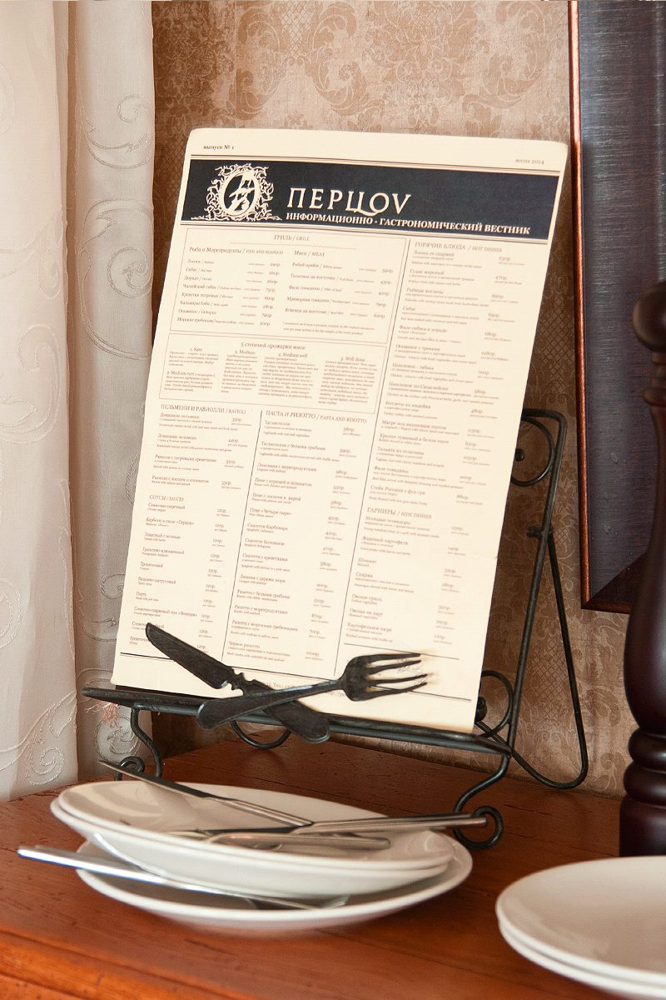
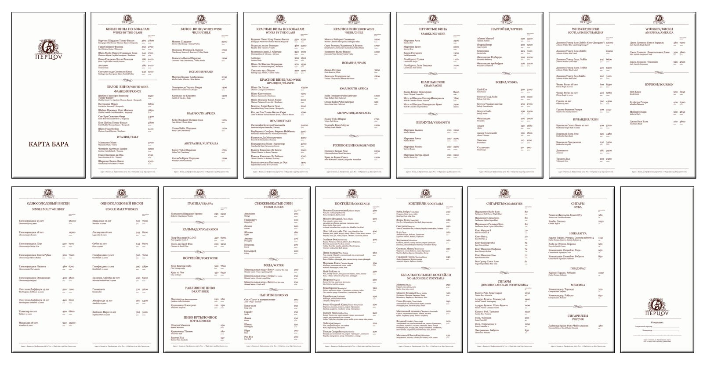

← All work
Restaurant
Perzov
A full print system for a restaurant with a classic, traditional style: from the main menu and bar menu to promotions and branded paper bags, all sharing one consistent look.
- Role
- Print design and photography
- Deliverables
- Main menu, bar menu, promotional flyers, branded paper bags, interior and food photography
- Tools
- Illustrator, InDesign, Photoshop


